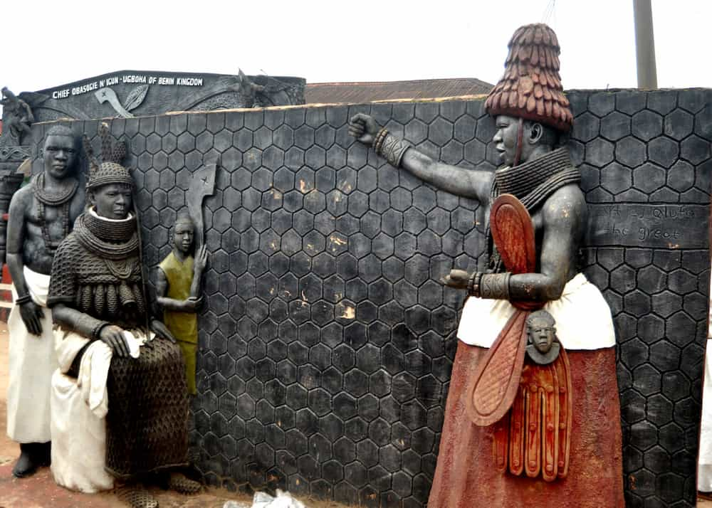
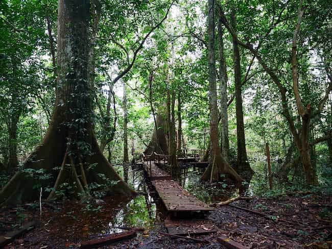
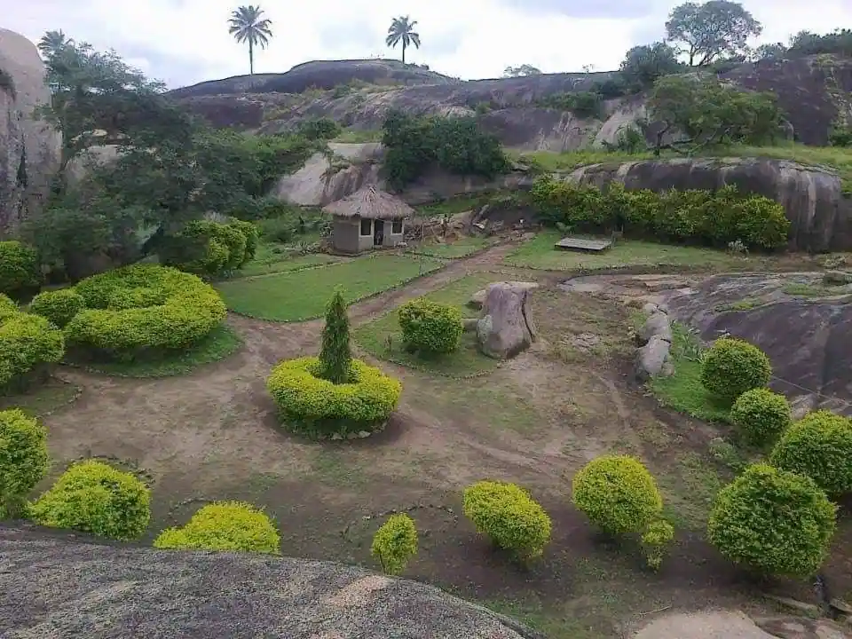
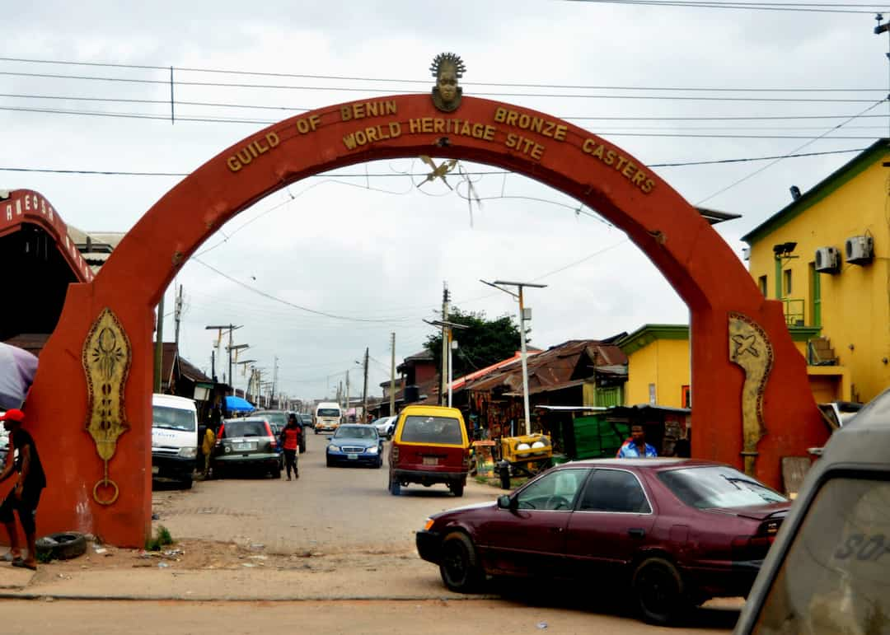
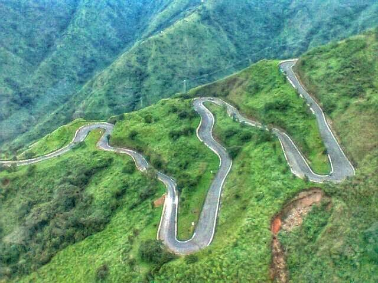
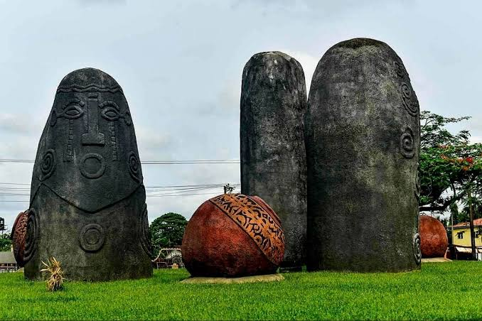

Benin City
Discover the heritage of the ancient Benin Kingdom, its traditional arts, royal history, and cultural landmarks.
From ancient kingdoms to peaceful forests and scenic hills, Nigeria has many places waiting to be discovered. Start your journey with these destinations.
Explore the history, culture, and natural beauty of Edo State, home to the historic Benin Kingdom.

Discover the heritage of the ancient Benin Kingdom, its traditional arts, royal history, and cultural landmarks.

Experience the beauty of a protected forest known for its wildlife, trees, and rich biodiversity.

Enjoy scenic landscapes, fresh air, and beautiful views around the hills in northern Edo State.

Explore the home of bronze in Nigeria

Enjoy scenic hills and beautiful views in Gembu highland region located on the Mambilla Plateau in Sardauna Local Government Area, Taraba State, Nigeria.
Explore Benin palace, built by Oba Ewedo (1255AD – 1280AD), located at the heart of ancient City of Benin. It was rebuilt by Oba Eweka II (1914–1932) after the 1897 war with the British it was destroyed.
Enjoy Agbokim Waterfalls, popularly known as the "seven-faced wonder of nature," a breathtaking series of seven cascading streams that plunge 75 metres (246 feet) down a steep cliff into a lush tropical rainforest Taraba State, Nigeria.

The Alok Ikom Stone Monoliths are unique to Cross River State in Nigeria. The Akwasnshi/Atal, as the monolith is called among the Ejagham people of Cross River, is distributed among over thirty communities.
Nigeria has much more to offer, from waterfalls and mountains to historic towns and cultural festivals. Research destinations in other states as you plan your next adventure.
Recommend a DestinationHave you visited a place that deserves more attention? Share its name, location, and story with the Naija Trails community.
Share Your Recommendation